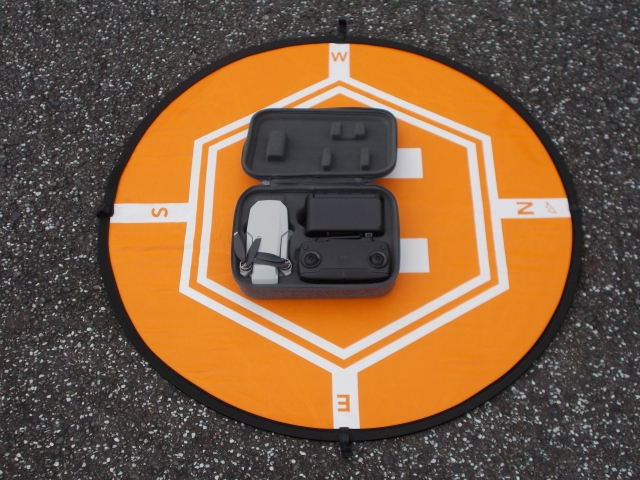
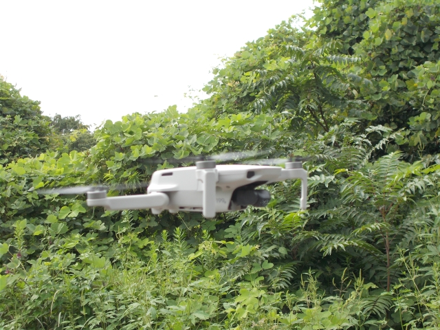
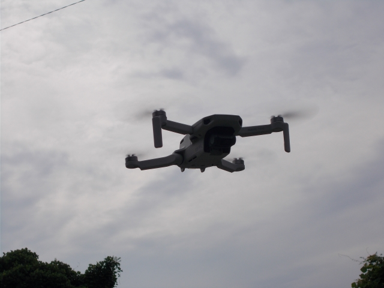
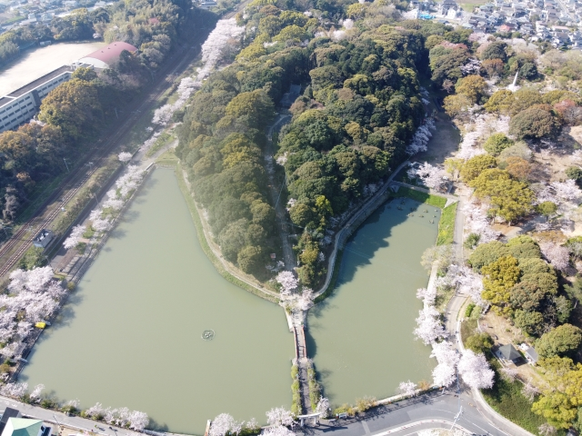
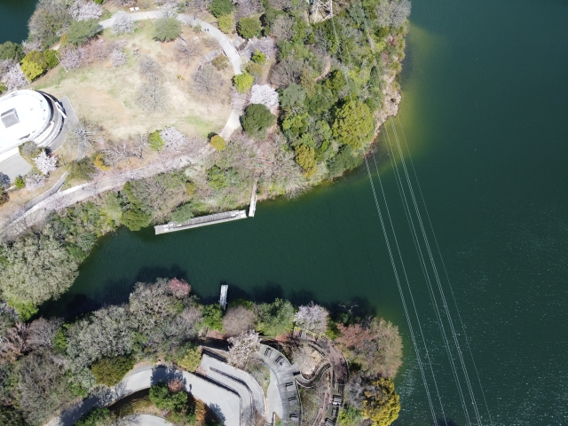
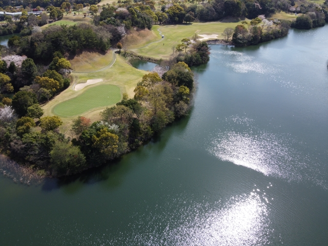
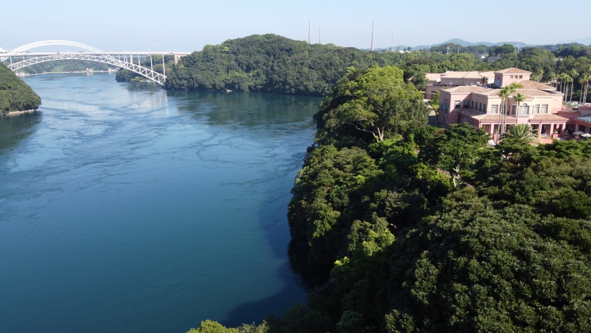
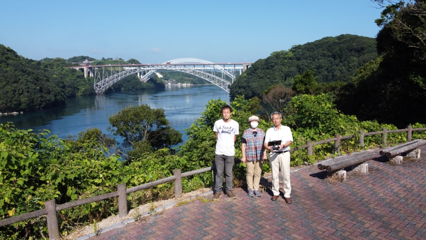
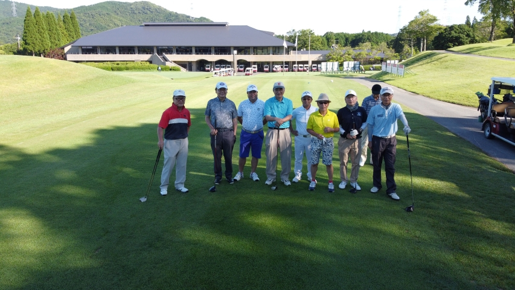

Ｍａｖｉｃ Ｍｉｎｉ
離 陸 前
荷姿 専用ケースに鎮座
ホバリング

鷹見神社の森にて
ホバリング２

前から写したら、逆光でした
桜の垣生公園

春爛漫の垣生公園、幼いころよく遊びました
壊れたポンツーン

壊れたままのポンツーン。2021春に撤去されました。
瀬板の森GOLF

三菱化成の土場だった場所が、いまは公園とゴルフ場に生まれ変わっています。
西海橋コラソンホテル

風光明媚な西海橋コラソンホテル。現在は大手資本に買収された模様です。
西 海 橋

潮が早いことで有名な針尾瀬戸
東筑会コンペ

第71期東筑会有志コンペ 於 ザ・クラシックゴルフ倶楽部 服装からみて夏ですね